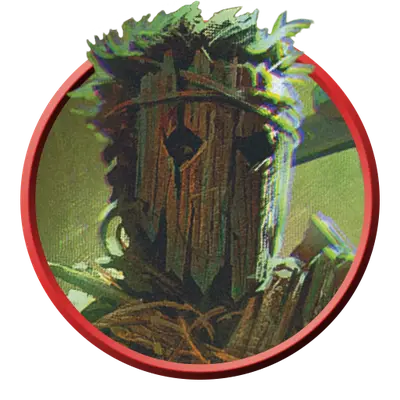

Изувер потрошитель
Relentless Slasher
Среднее Исчадие, Нейтральное Злое

Класс Защиты 15 Инициатива +4 (14)
Хиты 91 (14к8 + 28)
Скорость 40 футов
| мод | спас | ||
|---|---|---|---|
| СИЛ | 12 | +1 | +4 |
| ЛОВ | 18 | +4 | +7 |
| ТЕЛ | 14 | +2 | +5 |
| мод | спас | ||
|---|---|---|---|
| ИНТ | 14 | +2 | +2 |
| МДР | 15 | +2 | +5 |
| ХАР | 16 | +3 | +3 |
Иммунитеты Испуганный, Очарованный
Чувства Тёмное зрение 120 футов, пассивное Восприятие 12
Языки знает Все, но не говорит
Опасность 8 (3 900 опыта; БВ +3)
Особенности
Легендарное сопротивление (1/день). Если потрошитель проваливает спасбросок, он вместо этого может в нём преуспеть.
Действия
Мультиатака. Потрошитель совершает две атаки Резчим ножом.
Резчий нож. Бросок рукопашной или дальнобойной атаки: +7, досягаемость 5 фт. или дистанция 30/60 фт. Попадание: 9 (2к4 + 4) Рубящего урона плюс 21 (6к6) Некротического урона.
Легендарные действия
У этого существа есть 3 использования Легендарных действий; оно может немедленно после окончания хода другого существа потратить одно использование, чтобы совершить одно из следующих действий. Существо восполняет все потраченные использования в начале каждого своего хода.
Самонаводящийся нож. Спасбросок Ловкости: Сл 15, одно существо в пределах 120 футов, по которому потрошитель попал атакой Резчим ножом в течение последних 24 часов. Провал: 11 (2к6 + 4) Рубящего урона.
Ударил — ускользнул. Потрошитель совершает одну атаку Резчим ножом, а затем телепортируется в видимое им незанятое пространство в пределах 30 футов. Потрошитель не может совершить это действие снова до начала своего следующего хода.
Бонус мастерства +3
Среда обитания Любая
Сокровища Оружейные
Неумолимые изуверы
Связанные договором душегубы
Неумолимые изуверы — это искажённые силой исчадий маньяки, что возникают из смертных, заключивших сделку с нечестивыми силами. Способности их зависят от их собственных навязчивых идей и источника тёмного могущества.
Изувер потрошитель преследует жертв с неутомимой одержимостью, не отвлекаясь ни на что иное. Он вершит кровавое дело в полной тишине, а затем растворяется во тьме и дурной славе.